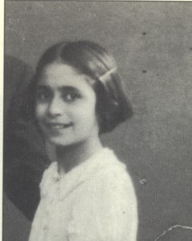

Portrait d’archive
Claire Clara Brodzki
Claire Clara BRODZKI
Claire Clara BRODZKI est née le 20/04/1928.
Rassemblée à Lyon, elle est déportée à Auschwitz le 30/05/1944 par le convoi n°75. Elle est morte en déportation.
Déportée seule
Dernière adresse connue : 75, montée de la grande côte 69001 (Lyon)
Nom : BRODZKI BRODZKY BRODZKA
Prénom(s) : Claire Clara
Date naissance : 20/04/1928
Âge (ans) : 16
Lieu naissance : Paris
Pays ou département : 75012
Lieu rassemblement : Lyon
Dernière adresse : 75 montée de la Grande Côte
Ville : Lyon
Code postal : 69
N° Convoi : 75
Date déportation : 30/05/1944
Informations diverses : Fille de Bajla Ruchla née KLAJNFELD épouse BRODZKA et de Berek BRODZKI et soeur de Lucyna. Ils habitaient au 68, Rue de la Mare à Paris dans le 20e. Sa mère Baila Brodzki est déportée à Auschwitz par le convoi 12 au départ de Drancy le 29/07/1942. Son père Berek Brodzki est déporté à Auschwitz par le convoi 47 au départ de Drancy le 11/02/1943. Elle est arrêtée par la Sipo-SD à Lyon. Emprisonnée à la prison de Montluc (Rhône), elle est internée au camp de Drancy (Seine-Saint-Denis) le 20/05/1944 sous le matricule 22670. Claire est déportée seule le 30/05/1944 par le convoi 75. Transférée de Auschwitz à Bergen-Belsen, morte de tuberculose à Dora, neufs jours après la Libération (Source: Témoignage de Sarah Lichtsztejn-Montard, In: Le Jour d'après : douze témoins de la libération des camps. Karine Habif, Patrick Banon Ed. 1994.) ou à Terezin (Tchécoslovaquie).
Brodzki (Clara), née le 20 avril 1928 à Paris (12e) (Seine), décédée le 17 juin 1945 à Terezin (Tchécoslovaquie). JO
Brodzka, née Klajnfeld (Bajla, Ruchla) le 17 avril 1900 à Varsovie (Pologne), décédée le 3 août 1942 à Auschwitz (Pologne) et non le 29 juillet 1942 à Drancy (Seine). Brodzki (Berek), né le 3 mai 1897 à Varsovie (Pologne), décédé le 16 février 1943 à Auschwitz (Pologne) et non le 11 février 1943 à Drancy (Seine).
Lieu de déportation : Auschwitz
Lieu de départ : Drancy
Nombre total de déporté·e·s du convoi : 1000
Gazé·e·s à l'arrivée : 627 (62,7 %)
Survivant·e·s en 1945 : 99 (9,9 %)